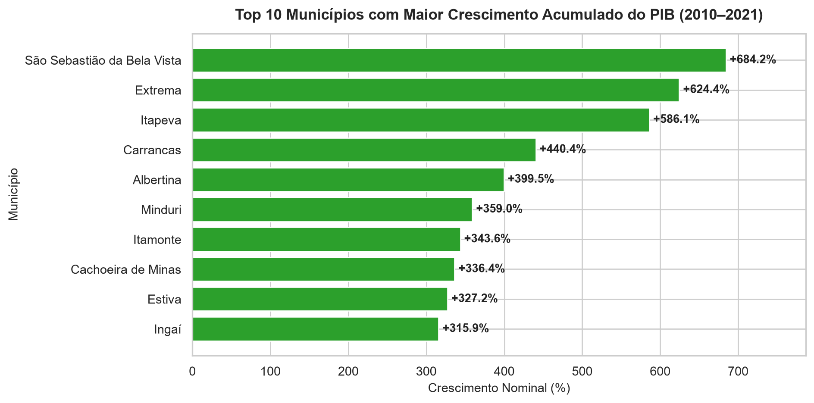
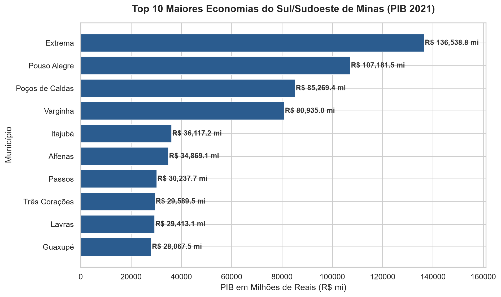
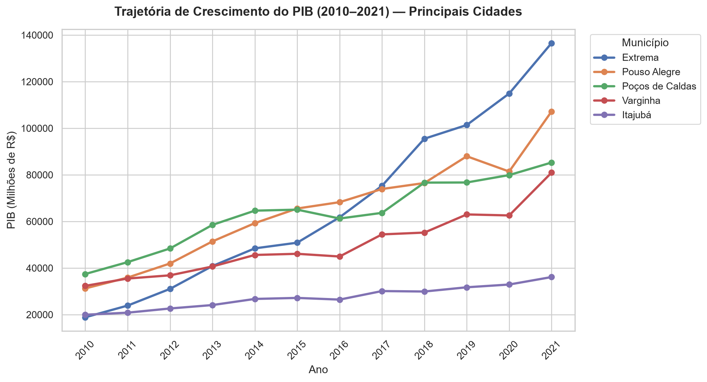
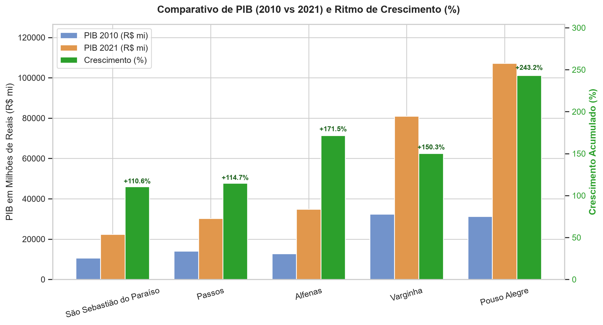

| municipio | posicao_2010 | posicao_2021 | variacao_posicao | pib_2010_milhoes_reais | pib_2021_milhoes_reais | crescimento_acumulado_pct | |
|---|---|---|---|---|---|---|---|
| 0 | Extrema | 5 | 1 | 4 | 18847.6 | 136538.8 | 624.4 |
| 1 | Pouso Alegre | 3 | 2 | 1 | 31230.5 | 107181.5 | 243.2 |
| 2 | Poços de Caldas | 1 | 3 | -2 | 37420.8 | 85269.4 | 127.9 |
| 3 | Varginha | 2 | 4 | -2 | 32341.4 | 80935.0 | 150.2 |
| 4 | Itajubá | 4 | 5 | -1 | 19938.1 | 36117.2 | 81.2 |
| 5 | Alfenas | 9 | 6 | 3 | 12844.0 | 34869.1 | 171.5 |
| 6 | Passos | 8 | 7 | 1 | 14085.8 | 30237.7 | 114.7 |
| 7 | Três Corações | 6 | 8 | -2 | 15089.0 | 29589.5 | 96.1 |
| 8 | Lavras | 7 | 9 | -2 | 14940.0 | 29413.1 | 96.9 |
| 9 | Guaxupé | 11 | 10 | 1 | 10027.4 | 28067.5 | 179.9 |



